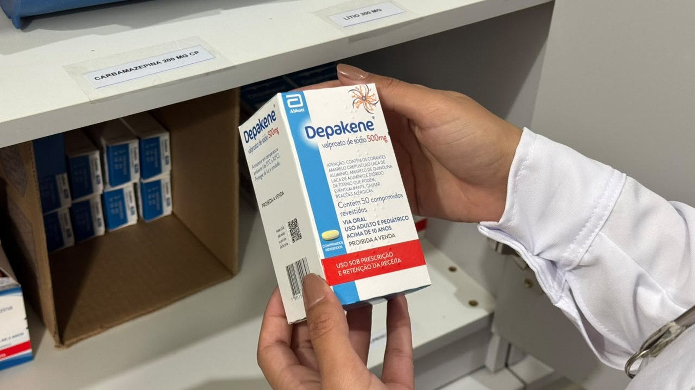
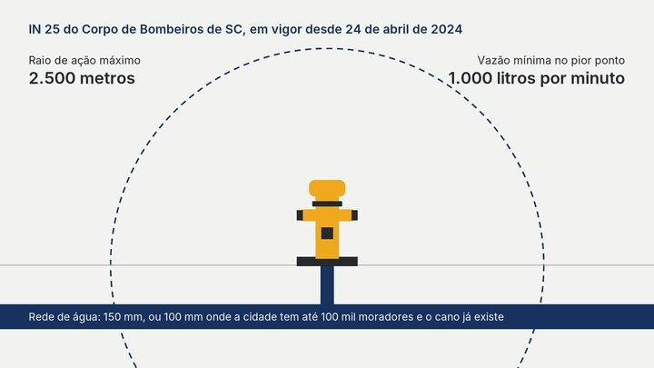

Itapema · Saúde
Itapema · SaúdeItapema anuncia 100% de abastecimento de remédio e a REMUME publicada no site é a 5ª edição, de 2023
A lista oficial do que o município entrega de graça, conferida item por item.
A Prefeitura informou em 16 de outubro que as UBS Sertão do Trombudo e Alto São Bento passaram a entregar sertralina, fluoxetina, clonazepam, carbamazepina, ácido valproico e amitriptilina, entre outros. São duas das 13 unidades que a própria Prefeitura lista no site, contagem nossa. A nota diz o que levar, documento de identidade do paciente e de quem for buscar, e não fala em receita. Na foto que a Prefeitura publicou junto, a caixa de remédio traz a tarja vermelha com os dizeres uso sob prescrição e retenção da receita.
Em 30 segundos · Modo de Leitura, formato original Santa Informa
Itapema ampliou a entrega de remédio controlado.
A nota da Prefeitura saiu em 16 de outubro de 2026.
Duas UBS passaram a oferecer o serviço.
São a Sertão do Trombudo e a Alto São Bento.
A Prefeitura lista 13 UBS no site dela.
Então o serviço chega a 2 das 13.
Essa conta é nossa, não está na nota.
A lista de remédios citada tem seis nomes.
Sertralina, fluoxetina e clonazepam.
Carbamazepina, ácido valproico e amitriptilina.
A nota escreve "entre outros" e para por aí.
A lista completa não foi publicada.
Insulina só na Alto São Bento.
Para ela, leve caixa de isopor ou bolsa térmica.
O horário nas duas é 8h às 12h.
E 13h às 17h, de dia útil.
A Alto São Bento fica na Rua 810 A, 57.
A Sertão do Trombudo, na Estrada Geral do Sertão.
A nota pede documento de identidade do paciente.
E documento de quem for buscar por ele.
Receita não aparece no texto da nota.
Mas a foto da própria Prefeitura mostra a tarja.
Ela diz uso sob prescrição e retenção da receita.
A nota não diz desde quando o serviço vale.
Nem onde o paciente retirava antes.
Nem se as outras 11 UBS vão receber o serviço.
Quem fala na nota é a diretora de Assistência Farmacêutica.
O nome dela é Amanda Biasi Ribeiro.
Em 11 de outubro contamos outra conta parecida.
O SAMU tinha treinado 2 das 13 UBS.
É a segunda vez no mês que o número é esse.
A REMUME é a lista do que o município dá de graça.
A que está no site é a 5ª edição, de 2023.
Isso nós conferimos em 11 de outubro.
Há ainda a Farmácia Especializada, no Centro.
Fica na Av. Governador Celso Ramos, 534.
O horário dela é o mesmo, 8h às 12h e 13h às 17h.
O contato é (47) 3267-1461, só WhatsApp.
Não falamos com a Secretaria de Saúde para esta matéria.
Poder PúblicoPublicada em Redação Santa Informa

A Prefeitura de Itapema publicou em 16 de outubro que as UBS Sertão do Trombudo e Alto São Bento passaram a entregar medicamento controlado. Pela lista de unidades que a própria Prefeitura mantém no site da Secretaria de Saúde, a cidade tem 13 UBS, então o serviço chega a duas delas. Essa conta é nossa: a nota não diz quantas unidades existem nem o que acontece com as outras onze. Quem fala no texto é a diretora de Assistência Farmacêutica, Amanda Biasi Ribeiro.
Os remédios citados são sertralina, fluoxetina, clonazepam, carbamazepina, ácido valproico e amitriptilina, e a nota fecha a lista com "entre outros", sem publicar o resto. A insulina é o único item com endereço único: sai só na Alto São Bento, e quem for buscar precisa levar caixa de isopor ou bolsa térmica, porque ela não pode esquentar no caminho. As duas unidades atendem das 8h às 12h e das 13h às 17h. A Alto São Bento fica na Rua 810 A, nº 57, e a Sertão do Trombudo, na Estrada Geral do Sertão. Vale notar que o bairro Sertão do Trombudo tem uma segunda unidade, a UBS Sertão II, que não entrou no aviso.
A nota lista o que levar e são dois documentos: a identidade do paciente e a de quem for buscar por ele. Receita não aparece no texto. Aparece na imagem que a Prefeitura publicou junto: a caixa na mão do profissional é de ácido valproico e traz a tarja vermelha com os dizeres uso sob prescrição e retenção da receita. Retenção quer dizer que a farmácia fica com a via do papel. Não é contradição necessariamente, pode ser só economia de texto num aviso curto, mas é a informação que mais falta a quem vai sair de casa para pegar o remédio pela primeira vez.
Em 11 de outubro publicamos que o SAMU havia treinado as equipes de 2 das 13 UBS de Itapema para parada cardíaca e AVC, e que nenhuma nota dizia quando chegaria às outras onze. O número agora se repete em outro serviço. Na mesma semana contamos que a REMUME, a lista oficial dos remédios que o município entrega de graça, está no site da Prefeitura na 5ª edição, com "Construção 2023" na capa. Quem precisa de controlado e não mora perto das duas unidades tem ainda a Farmácia Especializada, na Av. Governador Celso Ramos, 534, no Centro, que atende no mesmo horário e tem contato pelo (47) 3267-1461, só por WhatsApp.
O resumo de 30 segundos está no topo e a versão completa é o texto acima. Aqui ficam as três leituras da casa sobre o mesmo assunto.
Clara, a otimista
Quem toma remédio controlado toma todo mês, sem falhar, e o que mais pesa nessa rotina não é o remédio, é a viagem até ele. Tirar essa viagem do Centro e botar no Sertão do Trombudo e no Alto São Bento muda o dia de quem mora lá em cima do morro e de quem depende de ônibus. São dois bairros que costumam ficar no fim da fila quando serviço novo aparece, e desta vez começaram por eles.
Tem outro detalhe bom no aviso: a Prefeitura lembrou da caixa de isopor para a insulina. É a prova de que alguém pensou no caminho de volta, não só no balcão. E já que a lista publicada tem seis nomes e um "entre outros", fica a porta aberta para a próxima nota contar o resto, de preferência com a REMUME nova junto.
Seu Prudêncio, o criterioso
Merece atenção a data que não está lá. O aviso diz que o serviço "passa a ser oferecido" e não informa desde quando. Para serviço de farmácia isso importa mais do que parece: a pessoa organiza o transporte, chega às 8h e pode ouvir que ainda não começou. Uma linha com a data resolveria.
Vale acompanhar também a questão da receita. A nota pede dois documentos de identidade e não cita prescrição, enquanto a caixa fotografada pela própria Prefeitura traz a tarja de uso sob prescrição e retenção da receita. O tipo de receita e o prazo de validade variam conforme o remédio, e quem chega sem o papel certo volta para casa de mãos vazias. Some a isso que a lista divulgada é parcial e que a REMUME publicada no site é a de 2023, e o resultado é um paciente que não consegue conferir nada antes de sair.
Dito isso, descentralizar a entrega de controlado é decisão acertada e de efeito imediato na vida de quem usa. Uma sugestão útil: publicar numa página só a data de início, a lista completa dos remédios por unidade e o tipo de receita exigido em cada um. É pouco trabalho de redação e evita viagem perdida, que é o custo que o paciente paga quando a informação fica pela metade.
Caco, o sarcástico
Itapema tem 13 UBS. O SAMU treinou duas. O remédio controlado chegou a duas. A gente já está quase conseguindo adivinhar o número antes de abrir a nota, e isso é um talento que ninguém pediu para desenvolver.
Reclamação registrada: o aviso explica direitinho que a insulina quer caixa de isopor, o que é cuidado de quem pensou no sol do caminho, e esquece de dizer se precisa de receita, que é o papel sem o qual ninguém sai do balcão com nada. Deu para saber a temperatura do transporte e não deu para saber o documento. Na foto da própria Prefeitura a caixa está lá, tarja vermelha, dizendo uso sob prescrição e retenção da receita, mais legível que o texto.
Mas tá bom porque duas é mais que nenhuma, e quem mora no Sertão do Trombudo passou anos descendo a cidade inteira para pegar caixinha. Agora desce menos. Daqui a onze notas dessas a cidade inteira está atendida, e aí a gente comemora de verdade.
Fontes: As UBS Sertão do Trombudo e Alto São Bento, a lista com sertralina, fluoxetina, clonazepam, carbamazepina, ácido valproico e amitriptilina, o "entre outros", a insulina só na Alto São Bento, a caixa de isopor ou bolsa térmica, o horário das 8h às 12h e das 13h às 17h, os documentos de identidade do paciente e de quem busca e a fala da diretora de Assistência Farmacêutica Amanda Biasi Ribeiro estão na nota Saúde amplia dispensação de medicamentos controlados em duas UBS de Itapema, publicada pela Prefeitura de Itapema em 16 de outubro de 2026 e lida por nós em 18 de outubro. A tarja "uso sob prescrição e retenção da receita" e a etiqueta de carbamazepina 200 mg foram lidas por nós na foto que acompanha essa mesma nota. As 13 UBS, os endereços da Alto São Bento e da Sertão do Trombudo, a existência da UBS Sertão II no mesmo bairro e o endereço, o horário e o telefone da Farmácia Especializada estão na página da Secretaria de Saúde no site da Prefeitura. O treinamento do SAMU em 2 das 13 UBS está em O SAMU já treinou 2 das 13 UBSs de Itapema para parada cardíaca e AVC, e a REMUME na 5ª edição de 2023 está em Itapema anuncia 100% de abastecimento de remédio e a REMUME publicada no site é a 5ª edição, de 2023, as duas matérias nossas de 11 de outubro de 2026.
Itapema · SaúdeA lista oficial do que o município entrega de graça, conferida item por item.
 Itapema · Saúde
Itapema · SaúdeO mesmo número, duas de treze, em outro serviço da rede.

Itapema · InfraestruturaQuem paga o hidrante de coluna, segundo a norma que manda no assunto.